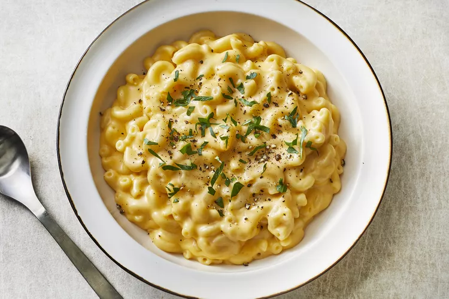

Mac and Cheese Recipe

Simple Macaroni and Cheese
Want to make mac and cheese fast and easy?
Use this recipe to make cheap and tasty
mac and cheese!
Ingredients
- 1 box elbow macaroni
- 1⁄4
cup butter
- 1⁄4
cup flour
- 1⁄2
teaspoon salt
- Ground black pepper
- 2 cups milk
- 2 cups shredded Cheddar cheese
Steps
- Boil a large pot of lightly salted water.
Cook macaroni is the boiling water, stirring
occasionally until cooked but firm to bite
(about 8 minutes).
- While doing step 1, melt butter in a saucepan
on medium heat. Add flour, salt, and pepper
and stir until smooth, which should take
about 5 minutes. Pour in milk slowly, while
continuously stirring. Continue cooking and
stirring until the mixture is smooth and
bubbling in about 5 minutes, making sure the
milk doesn't burn.
- Add cheese and stir until melted, this
takes about 2-4 minutes.
- Drain macaroni and fold into cheese sauce
until coated.